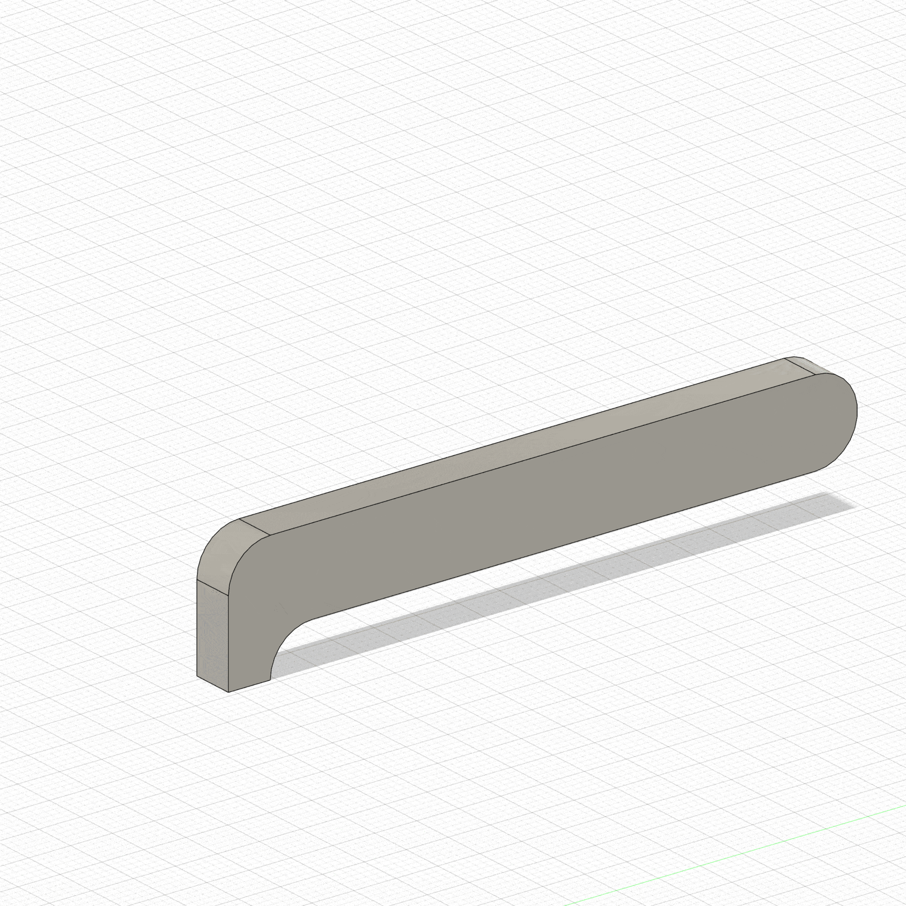

My first idea for my final project is a self playing guitar. To begin with the project I imported a guitar model into Fusion 360 and built a basic frame around it.
Heres the video of me designing my basic model
Next, I sketched out the basic design of what i would use to strum and what I would use to finger the chords
